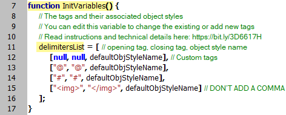
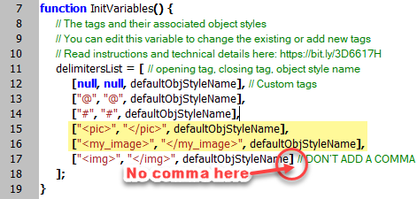
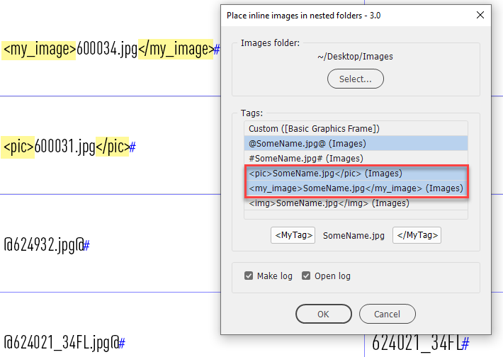
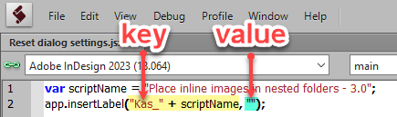
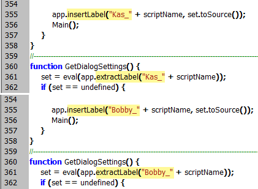
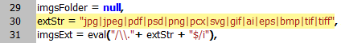

Place inline images in nested folders
Technical details
How to add new tags
As I’ve already mentioned, you can edit (or remove) the three hardcoded tags. Also, you can add new tags. That’s easy: you don’t have to be a programmer to do this!
At the very top of the script, in the InitVariables function, there declared a global variable called delimitersList. It’s an array of arrays representing the tags. The first element of a sub-array is the opening tag, the second is the closing tag. The last element is the default object style that is used when the script is run for the first time or when the ‘remembered’ object style is unavailable. It was defined using the locale-independent name — $ID/[Normal Graphics Frame] — which is supposed to work in all language versions displaying the style name in your locale. For example, for the English locale, it displays [Basic Graphics Frame], and for French — [Bloc graphique standard].

For example, let’s add a couple of tags. Open the script in a plain text editor and add two elements to the array, like so:

Important note: don’t add a comma after the last element. Commas are used as delimiters between the elements of an array.
This will add two more tags to the list in the dialog box.

Now, before running the modified version, I recommend you reset the dialog settings because you changed the number of controls in the dialog box which may (or may not) cause problems. You can do this by running this simple script which you can download from here (the modified version of the Place inline images in nested folders script is also included).

How it works
After you click the OK button (in Place inline images in nested folders), all the settings you choose in the dialog box, are saved in the InDesign application via the insertLabel method (command) which has two parameters separated by a comma:
- key
- value
The first parameter is a unique key which is formed from a prefix — Kas_ meaning that the script was developed by me (Kasyan) — plus the script name and version number defined in the scriptName variable at the top. This unique key is necessary to avoid interference with other scripts that may use this feature to store information.
The second parameter here is set to an empty string which makes the script forget all saved settings as if it’s run for the first time using the defaults.
Next time you run the script, the settings will be read via the extractLabel method and used in the dialog box.
To avoid issues with the dialog box which may result in the script throwing errors during execution, in the versions of the script that you adjust to your needs, I recommend you use your own unique key by changing the prefix in two places via the find-change feature:
after the insertLabel and extractLabel commands (in version 3.0 lines 355 and 361).

How to edit supported image formats
The following line — a regular expression used throughout the script — defines the supported image formats (file extensions):

Here you can add/remove/change image formats. This simple regular expression lists file extensions separated by the pile ( | ) character. I added only the most popular, in my personal opinion, file formats but InDesign supports much more.